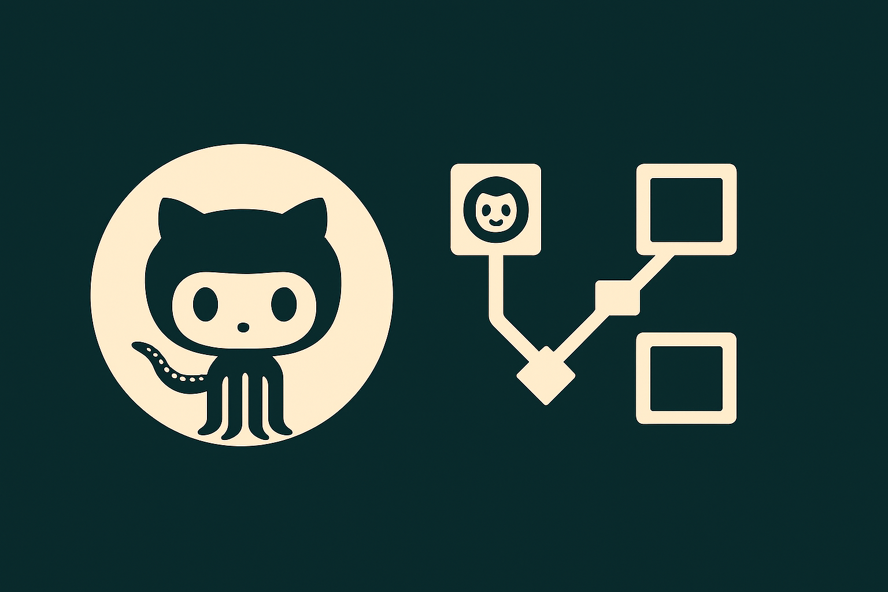
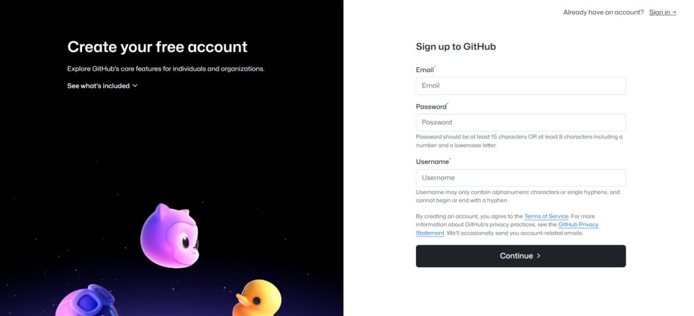
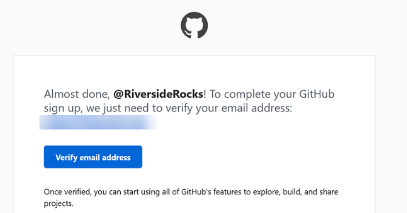
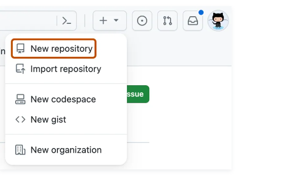
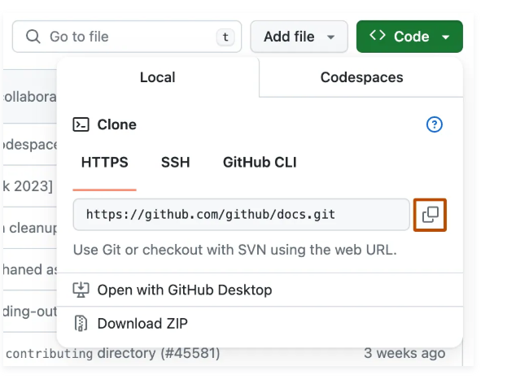

GitHub: A Beginner's Guide
Everything you need to know about Version Control and Collaboration.

GitHub is like a personal exhibition where you can display all your projects, from the smallest to the most ambitious. It’s a versioning platform, which means it allows you to track changes to your code over time and revert to previous versions. Versioning is essential for collaborating on projects, backing up your code, and keeping track of your code history. The platform is built on Git, the most widely used versioning system. If you want to learn more about Git and how it works, I recommend reading my previous article, “Learning Git Through Small Projects”.
When I first published my first project on GitHub, I was nervous. I found the GitHub community to be incredibly welcoming and friendly. What’s more, GitHub is like my online portfolio. Future employers often look at GitHub profiles to see what someone has worked on and what kind of programmer they are. So why not show them what I can do?
The goal of this article is to show you how to create a GitHub profile and how to get started using it.
Creating a GitHub Profile
The first step to sharing your code and collaborating with others is creating a GitHub profile. Here’s a step-by-step guide:

- Go to GitHub: Open your web browser and navigate to github.com.
- Sign up: Click the “Sign up” button and follow the instructions.
- Verify your account: Open the email GitHub sent you and click the verification link.
- Customize: Add a profile picture and a short Bio to tell others who you are.

Creating Your First Repository
A repository is like a folder where your project’s files are stored. Here is how to create one:

- Click the “+” button in the top right corner and select “New repository”.
- Give your repository a name (e.g.,
my-first-project). - Choose if you want it to be Public or Private.
- Tick the box "Add a README file" (this is where you describe your project).
- Click “Create repository”.
What to do after creating a repository?
Once your repository is ready on GitHub, you need to get it onto your computer.
Using the command git clone <repository URL> copies the repository
from GitHub.com to your local machine.

In GitHub, you can create files and folders for your project. Using Git commands, you can track changes, commit them, and upload them back to GitHub.
My Workflow: Frequent Commits
When developing my C++ projects, I used a strategy of frequent commits. After implementing each piece of functionality, such as generating random numbers, I created a commit with a brief but concise description.
"This allowed me to have a clear history of changes and easily revert to a previous version if necessary."
For example, when I implemented input handling to prevent crashes, but the new code caused
unexpected behavior, I used the git revert <hash_commit> command.
This created a new commit that undid the changes while preserving the complete history.
Reflection
"Regular commits with concise descriptions are key. I learned from this experience and now try to write commit messages as best I can. Sharing my projects assists me in learning while helping others out."
Conclusion
GitHub is more than just a storage for code; it's a place where you grow as a developer. By sharing your work, you open doors to feedback and collaboration that can take your projects to the next level. Don't be afraid to make mistakes – that's what Git history is for!